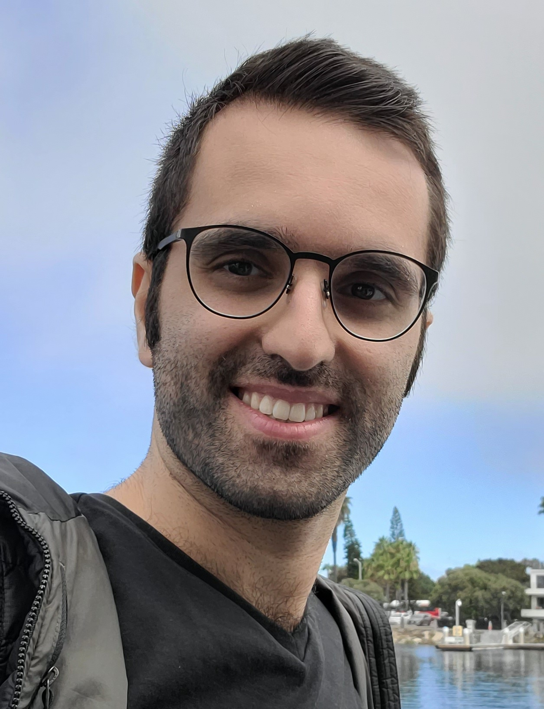

I am a Ph.D. candidate at the University of Michigan, working on applied probability, queueing theory, stochastic networks, and mechanism design. My research has applications in service operations and on-demand platforms, with a recent focus on strategic queueing. I am advised by Prof. Saif Benjaafar and Prof. Brian Denton.
